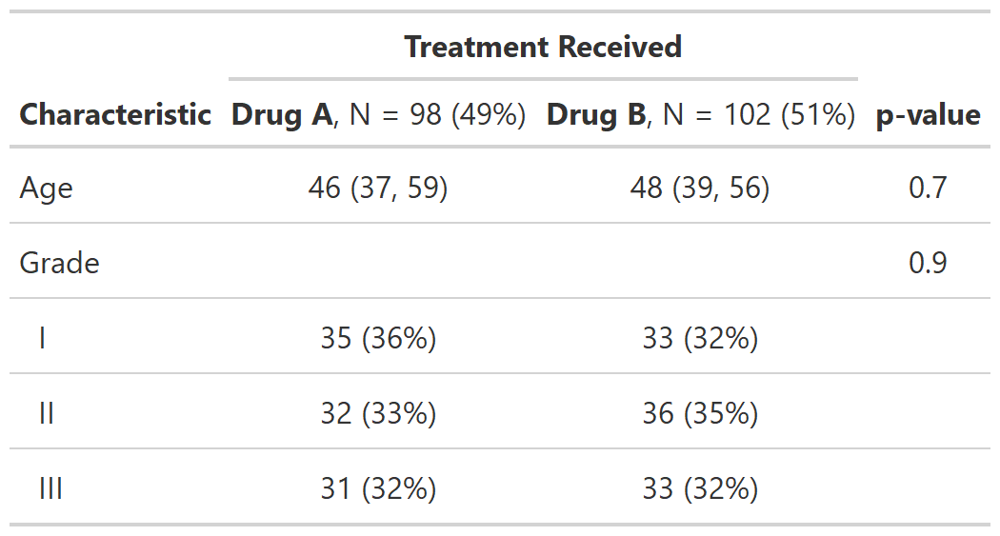
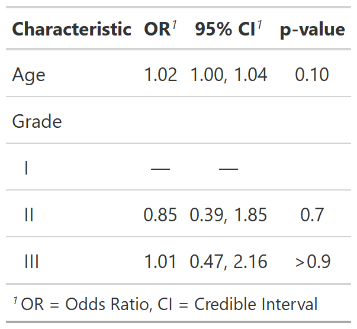

| modify {gtsummary} | R Documentation |
These functions assist with updating or adding column headers
(modify_header()), footnotes (modify_footnote()), and spanning
headers (modify_spanning_header()). Use show_header_names() to learn
the column names.
modify_header(
x,
update = NULL,
stat_by = NULL,
text_interpret = c("md", "html"),
...
)
modify_footnote(x, update, abbreviation = FALSE)
modify_spanning_header(x, update)
show_header_names(x = NULL, quiet = NULL)
x |
a gtsummary object |
update |
list of formulas or a single formula specifying the updated
column header, footnote, or spanning header.
The LHS specifies the column(s) to be updated, and the RHS is the updated text.
Use the |
stat_by |
Used with
Syntax follows |
text_interpret |
String indicates whether text will be interpreted with
|
... |
Specify a column and updated column label,
e.g. |
abbreviation |
Logical indicating if an abbreviation is being updated. |
quiet |
Logical indicating whether to print messages in console. Default is
|
Updated gtsummary object
Example 1
Example 2

Example 3

Daniel D. Sjoberg
Other tbl_summary tools:
add_n.tbl_summary(),
add_overall(),
add_p.tbl_summary(),
add_q(),
add_stat_label(),
bold_italicize_labels_levels,
inline_text.tbl_summary(),
inline_text.tbl_survfit(),
tbl_merge(),
tbl_stack(),
tbl_summary()
Other tbl_svysummary tools:
add_n.tbl_summary(),
add_overall(),
add_p.tbl_svysummary(),
add_q(),
add_stat_label(),
tbl_merge(),
tbl_stack(),
tbl_svysummary()
Other tbl_regression tools:
add_global_p.tbl_regression(),
add_nevent.tbl_regression(),
add_q(),
bold_italicize_labels_levels,
combine_terms(),
inline_text.tbl_regression(),
tbl_merge(),
tbl_regression(),
tbl_stack()
Other tbl_uvregression tools:
add_global_p.tbl_uvregression(),
add_nevent.tbl_uvregression(),
add_q(),
bold_italicize_labels_levels,
inline_text.tbl_uvregression(),
tbl_merge(),
tbl_stack(),
tbl_uvregression()
Other tbl_survfit tools:
add_n.tbl_survfit(),
add_nevent.tbl_survfit(),
add_p.tbl_survfit(),
tbl_merge(),
tbl_stack(),
tbl_survfit()
# create summary table
tbl <- trial[c("age", "grade", "trt")] %>%
tbl_summary(by = trt, missing = "no") %>%
add_p()
# print the column names that can be modified
show_header_names(tbl)
# Example 1 ----------------------------------
# updating column headers and footnote
modify_ex1 <- tbl %>%
modify_header(
update = list(label ~ "**Variable**",
p.value ~ "**P**")
) %>%
modify_footnote(
update = starts_with("stat_") ~ "median (IQR) for Age; n (%) for Grade"
)
# Example 2 ----------------------------------
# using `stat_by=` argument to update headers, remove all footnotes, add spanning header
modify_ex2 <- tbl %>%
modify_header(stat_by = "**{level}**, N = {n} ({style_percent(p)}%)") %>%
# use `modify_footnote(everything() ~ NA, abbreviation = TRUE)` to delete abbrev. footnotes
modify_footnote(update = everything() ~ NA) %>%
modify_spanning_header(starts_with("stat_") ~ "**Treatment Received**")
# Example 3 ----------------------------------
# updating an abbreviation in table footnote
modify_ex3 <-
glm(response ~ age + grade, trial, family = binomial) %>%
tbl_regression(exponentiate = TRUE) %>%
modify_footnote(ci ~ "CI = Credible Interval", abbreviation = TRUE)